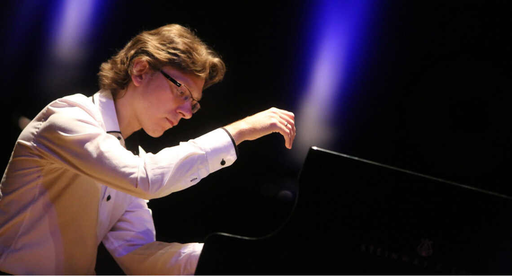

  <div class="cover-holder">
    
    <marquee class="GeneratedMarquee" direction="left" scrollamount="5" behavior="scroll">Музичні  твори звучать у виконанні Андрія Луньова  —  лауреата Міжнародних конкурсів, викладача Київської середньої спеціалізованої музичної школи ім. М. В. Лисенка.</marquee>
  </div>
  <vg-player style="height: 50px;">
    <vg-controls>
        <vg-play-pause></vg-play-pause>
        <vg-playback-button></vg-playback-button>

        <vg-time-display vgProperty="current" vgFormat="mm:ss"></vg-time-display>

        <vg-scrub-bar>
            <vg-scrub-bar-current-time></vg-scrub-bar-current-time>
            <vg-scrub-bar-buffering-time></vg-scrub-bar-buffering-time>
        </vg-scrub-bar>

        <vg-time-display vgProperty="left" vgFormat="mm:ss"></vg-time-display>
        <vg-time-display vgProperty="total" vgFormat="mm:ss"></vg-time-display>

        <vg-mute></vg-mute>

    </vg-controls>

    <audio #media [vgMedia]="media" id="myAudio" preload="auto">
      <source [src]="'/assets/Rozdil_' + item.id + '.mp3'" type="audio/mp3">
    </audio>
</vg-player>
